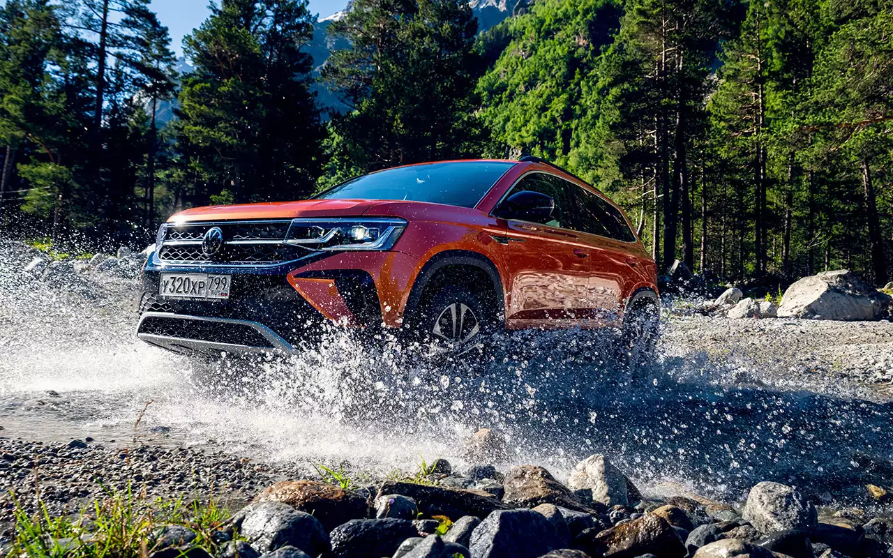
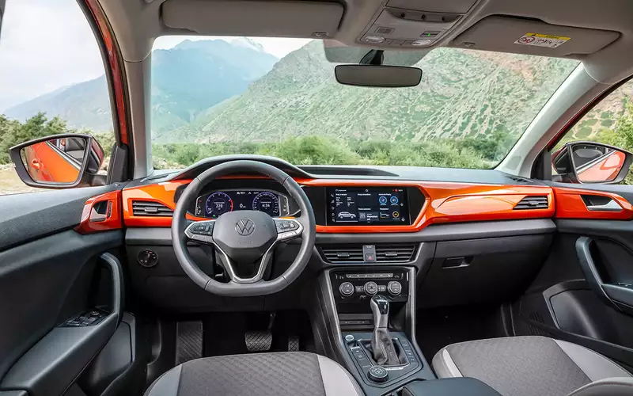
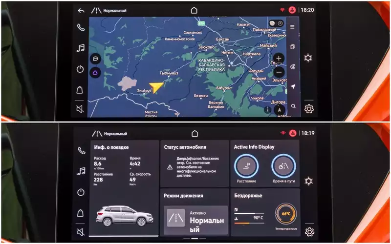
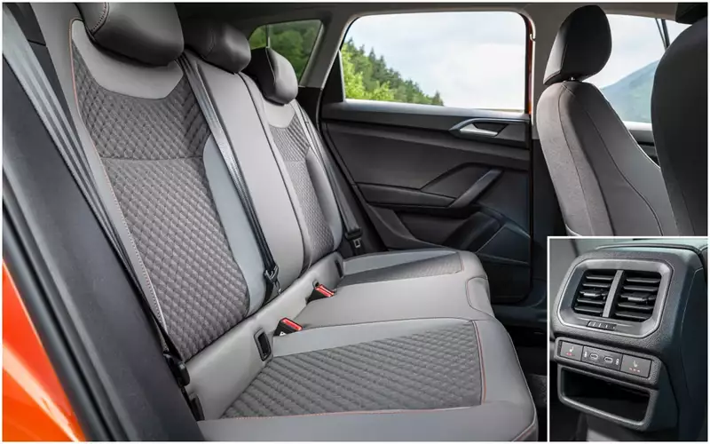
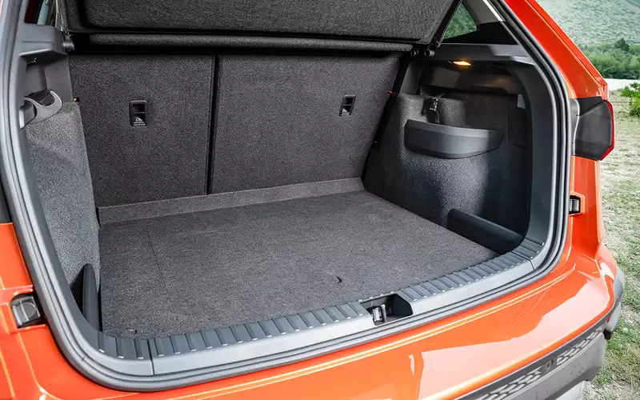

Volkswagen Taos
~~~~~~~~~~~~~~~~~~~~~~~~~~~~~~~~~~~~~~~~~~~~~~~~
Новый немецкий кроссовер от 1,6 млн руб.
~~~~~~~~~~~~~~~~~~~~~~~~~~~~~~~~~~~~~~~~~~~~~~~~
************************************************************************************************************************************************************************************************************************************************************************************
Volkswagen Taos российской сборки - автомобиль хороший. Но мог бы быть и подешевле...
~~~~~~~~~~~~~~~~~~~~~~~~~~~~~~~~~~~~~~~~~~~~~~~~~~~~~~~~~~~~~~~~~~~~~~~~~~~~~~~~~~~~~~~~~~~~~~
************************************************************************************************************************************************************************************************************************************************************************************
Я бы тоже с удовольствием вернулся во времена доллара по 30 и упакованного Дастера за 700 тысяч. А реалии
таковы, что за 1,6 миллиона рублей можно к Volksaen Taos с мотором 1.6 MPI на «ручке» в базовой
комплектации и с передним приводом. Это по прайсу, без дилерской наценки!
Но и эта цена — рекламная. Других версий с атмосферником на старте продаж нет, а следующая ступень —
переднеприводный Taos 1.4 TSI с 8‑ступенчатым автоматом за 1,86 млн. С учетом опций стоимость самой дорогой
машины уходит за 2,35 млн. За такие деньги скромный локализованный кроссовер должен быть идеальным!
Как он едет?
~~~~~~~~~~~~~~~~~~~~~~~~~~~~~~~~~~~~~~~~~~~~~~~~~~~~~~~~~~~~~~~~~~~~~~~~~~~~~~~~~~~~~~~~~~~~~~~~~~
В дни теста в Приэльбрусье держалась температура +30…35 ˚C. Высота над уровнем моря — до 2200 м. Да еще и
максимально зажатый шестой экологический класс. Поэтому я не удивился тому, что с водителем и одним
пассажиром Taos со 150‑сильным турбомотором едет не слишком резво. Веселеет только если выбрать
спортивный или внедорожный режим ездовых настроек шайбой на тоннеле. Помнится, Skoda Karoq по Москве
ехала пободрее — поэтому с выводами о тяговитости Таоса подожду до равнинных тестов.
Попробовать удалось не только полноприводный вариант с роботом DSG, но и переднеприводный с классическим
8‑ступенчатым Айсином. Заметной разницы в работе трансмиссий я не почувствовал. И это комплимент в адрес
гидромеханического автомата: многие по-прежнему верят только в гидромеханику, а робот годами портил себе
имидж.

******************************************************************************************************************************************************************************************************************************************************************************************
Выбирайте дорогу!
~~~~~~~~~~~~~~~~~~~~~~~~~~~~~~~
Время идет, а платформа MQB своих позиций не сдает. Taos охотно следует за рулем и умеренно кренится в
виражах. Одно из лучших шасси в классе в плане управляемости!
Перфекционизм заканчивается вместе с хорошим асфальтом. Жестко! Хуже всего подвеска отрабатывает грубые
одиночные выбоины. А, к примеру, по заляпанной заплатками дороге Volkswagen едет сносно.
К свединию:
Volkswagen Taos 1.4 TSI 4×4. Цена в России от 1 626 900 ₽. За доплату рефлекторные LED-фары заменят на
линзованные адаптивные (на фото), со светящейся полосой на всю решетку радиатора и ходовыми огнями в
стиле BMW. За автокорректор и функцию поворота пучков спасибо, но хотелось бы еще омыватель и
противотуманки. Ближний свет яркий, но светит под нос: ехать некомфортно. Дальний отличный и умеет
включаться-выключаться автоматически.
Значительная часть моего маршрута проходила вне асфальта — а проселки в горах усеяны камнями. Принцип
«больше скорость — меньше ям» здесь сработал. А если ехать на Таосе крадучись, сможешь посчитать каждый
камушек. Как только скорость переваливает за 50 км/ч, становится куда лучше. Местами увлекался и уходил
за 80 км/ч — Taos сдюжил. Но машину жалко! Или просто повезло: под защитой двигателя всего 170 мм.
Возникающие заносы мягко гасила система стабилизации. И дорожные шины Pirelli Scorpion показали себя
молодцом: порезов не словили, хотя имели право. За китайской докаткой Linglong лезть не пришлось.
Приятно удивил акустический комфорт — тихо даже на шершавом асфальте. Хороши и тормоза с четко
нарастающим замедлением, которое легко контролировать перемещением педали и усилием на ней.
МЕДИАСИСТЕМА — ЗАЧЕТ!
~~~~~~~~~~~~~~~~~~~~~~~~~~~~~~~~~
************************************************************************************************************************************************************************************************************************************************************************************

В комплектации Joy! интерьер развеселили оранжевыми вставками на панели и дверях и акцентами на сиденьях
того же цвета. Фольксвагеновскую строгость это не скрывает, но всяко лучше, чем тотальная унылость
Карока. У цифровой приборки на 10 дюймов три варианта дизайна и меняющийся цвет (синий, красный, желтый)
в зависимости от выбранного ездового режима.
Гордость Таоса — новая медиасистема, которую он получил первым среди всех моделей концерна. Богатый по
меркам сегмента дисплей на 10 дюймов работает не хуже смартфона — без задержек, с хорошей реакцией даже
на мультитач.
Меню полностью переоформлено, но сохранило немецкую логику. Операционная система Android позволяет
загружать сторонние приложения, включая полезный для водителя Яндекс.Навигатор. И это едва ли не первый
случай, когда программа работает без глюков, будучи интегрированной в штатную систему.

******************************************************************************************************************************************************************************************************************************************************************************************
Эргономика
~~~~~~~~~~~~~~~~~~~~~~~~~~~~~~~~~~~
О фольксвагеновской эргономике сказано многое. Отдельные детали не меняются десятилетиями, и не приходит
в голову за это упрекать — потому что удобно. Без лишнего пафоса немцы поставили на В‑кроссовер все
четыре стеклоподъемника с авторежимом.

******************************************************************************************************************************************************************************************************************************************************************************
Сзади очень комфортно вдвоем, а третий тут лишний. Есть редкая опция — центральный подлокотник. А
так всё стандартно: дефлекторы, порты USB-C, обогрев.
Климат-контроль в небольших машинах нередко плохо работает в авторежиме: производители экономят на
датчиках, производительности или тщательной настройке. У Таоса он двухзонный и с отличным алгоритмом:
даже в машинах гораздо более дорогих автоматика не всегда столь адекватна. Обогрев передних сидений и
руля по всему ободу входят в стартовую комплектацию.

Багажник даже с урезанным полным приводом объемом (418 л против 500 литров у версии 4×2) один из
лучших в классе. Жаль, что фиксаторов грузов на липучках (как у Карока) Таосу пока не
досталось.
На чем сэкономили?
~~~~~~~~~~~~~~~~~~~~~~~~~~~
************************************************************************************************************************************************************************************************************************************************************************************
Пластик исключительно жесткий — мягкими сделаны только подлокотники дверей. Пространство под очечник на
потолочной консоли есть, но вместо него — заглушка. В бардачке нет ни подсветки, ни вывода от
кондиционера. Хотя всё это есть в родственном Кароке. Копеечный скребок для льда — и тот для Таоса
зажали. Не достались Фольксвагену и коленная подушка безопасности, и обогрев форсунок стеклоомывателя?
KAROQ В ГРИМЕ
На глаз родство Таоса с Кароком выдает только линия бокового остекления. Volkswagen на 35 мм длиннее и на
символический миллиметр ниже.
Новый VW Taos: что он (не) взял у Карока
По набору версий Фольксвагену со Шкодой пока не тягаться. У Фолькса — восемь базовых вариантов в
прайс-листе, причем только одна с доступным двигателем 1.6. У Шкоды — десять модификаций, из которых
четыре с атмосферником. Дополнительных пакетов и отдельных опций у Карока тоже заметно больше.
А вот в фиксированных комплектациях у Таоса больше оборудования. В минимальный набор Respect включены
светодиодный ближний и дальний свет, шесть подушек безопасности (у Шкоды четыре), круиз-контроль,
ограничитель скорости, обогрев руля и датчик света. За всё это покупатели базового Карока должны
доплатить.
Во втором снизу уровне оснащения Status появляются, среди прочего, электроприводы сиденья водителя и
медиасистема с дисплеем на 10 дюймов и Яндекс.Навигатором. В топе не нужно доплачивать за обогрев задних
сидений и ветрового стекла, цифровую комбинацию приборов, ассистент управления дальним светом и другие
опции.
Если оснастить Шкоду так же, как Volkswagen, она и стоить станет столько же.
******************************************************************************************************************************************************************************************************************************************************************************
Volkswagen Taos неплох, но не идеален. Ценник отпугнет многих. Но Taos прельстит тех, кто не видит для
себя иного автомобиля, кроме немецкого. И тех, кто в каких-то мелочах считает его более привлекательным,
нежели Karoq.
Volkswagen Taos 1.4 TSI 4×4
~~~~~~~~~~~~~~~~~~~~~~~~~~~~~~~~~~~~~
************************************************************************************************************************************************************************************************************************************************************************************
- Длина / ширина / высота / база 4417 / 1841 / 1600 / 2638 мм
- Объем багажника 418 л
- Снаряженная масса 1467 кг
- Двигатель бензиновый, Р4, 16 клапанов, 1395 см³; 110 кВт / 150 л.с. при 5000 об/мин; 250 Н·м при 1500
об/мин
- Время разгона 0–100 км/ч 8,9 с
- Максимальная скорость 190 км/ч
- Топливо / запас топлива АИ‑95, АИ‑98 / 55 л
- Расход топлива: город / трасса / смешанный цикл 10,1 / 8,0 / 6,7 л / 100 км
- Трансмиссия полный привод; Р7
Volkswagen Taos и конкуренты
~~~~~~~~~~~~~~~~~~~~~~~~~~~~~~~~~~~~~~~~
Борьба в сегменте компактных паркетников обостряется: сменили поколение Duster и Creta, ввязался в борьбу
абсолютно новый Haval Jolion.
************************************************************************************************************************************************************************************************************************************************************************************
Renault Duster (114–150 л.с.): 1,0–1,51 млн ₽
Hyundai Creta (121–150 л.с.): 1,2–1,9 млн ₽
Kia Seltos (121–150 л.с.): 1,21–2,2 млн ₽
Haval Jolion (143–150 л.с.): 1,26–1,75 млн ₽
Renault Arkana (114–150 л.с.): 1,29–1,81 млн ₽
Skoda Karoq (110–150 л.с.): 1,57–2,08 млн ₽
VW Taos (110–150 л.с.): 1,63–2,2 млн ₽
Peugeot 2008 (100–150 л.с.): 1,67–2,23 млн ₽
Mazda CX‑30 (150 л.с.): 1,73–2,26 млн ₽
ВЫБОЗ ЗА ТЕМ КОМУ ЧТО НРАВИТСЯ!
~~~~~~~~~~~~~~~~~~~~~~~~~~~~~~~~~~~~~~~~~~~
************************************************************************************************************************************************************************************************************************************************************************************************